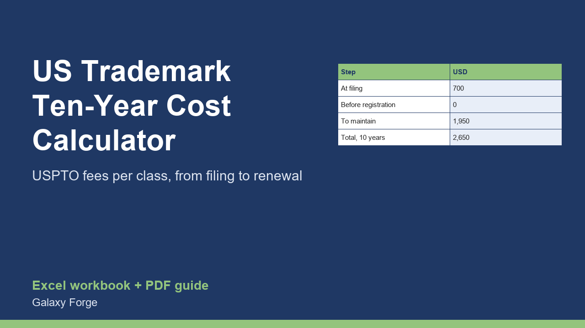

Enter your number of classes and how you file and see the USPTO government fees from application to the year-10 renewal, line by line, with the fee table read from the official schedule.
Registering a US trademark does not end with the application fee. After filing there can be a statement of use, extensions, a declaration of use between the fifth and sixth year, and a combined declaration and renewal at year ten, and every one of those government fees is charged per class. Most cost pages quote one number for the first step only.
This workbook adds the whole ten-year path. You enter the number of classes, whether you file electronically or on paper, whether the application is use-based or intent-to-use, and a few optional extras. The Cost sheet then shows the fee for every step and the total, the average per year and the cost per class.
The fees are not typed into formulas. They sit on the Fees sheet, read from the USPTO fee schedule on 29 October 2026 with the fee code of each line, so you can compare any figure with the official page. If the USPTO changes a fee, you change one cell on the Fees sheet and every result follows.
The workbook covers government fees only. Attorney fees, filing abroad, petitions, responses to office actions and late-filing surcharges are outside it and the limits section says so plainly.
1) On Inputs, enter your number of classes and choose E-file or Paper. 2) Choose Use-based or Intent-to-use; for intent-to-use also enter how many six-month extensions you expect (0 to 5). 3) Answer the optional questions about free-form text and insufficient information. 4) Read the Cost sheet: fees at filing, fees before registration, fees to maintain the registration, and the ten-year total.
Price: $12, one-time. Download: us_trademark_ten_year_cost_calculator.xlsx (Inputs, Cost, Fees) and this guide. Works in Excel 2016 or later, Excel for Mac and Excel on the web; opens in Google Sheets and LibreOffice.
New product, listed 2026-11-06: no sales or reviews yet. Example figures in the workbook are illustrative.
This workbook multiplies the USPTO fees listed on its Fees sheet, transcribed from the USPTO fee schedule on 29 October 2026 (schedule revised 14 August 2026). It is not legal advice, covers government fees only (no attorney fees, no Madrid or international filings, no petitions, office-action responses or late-filing surcharges), and fees change: check the USPTO fee schedule before you file.